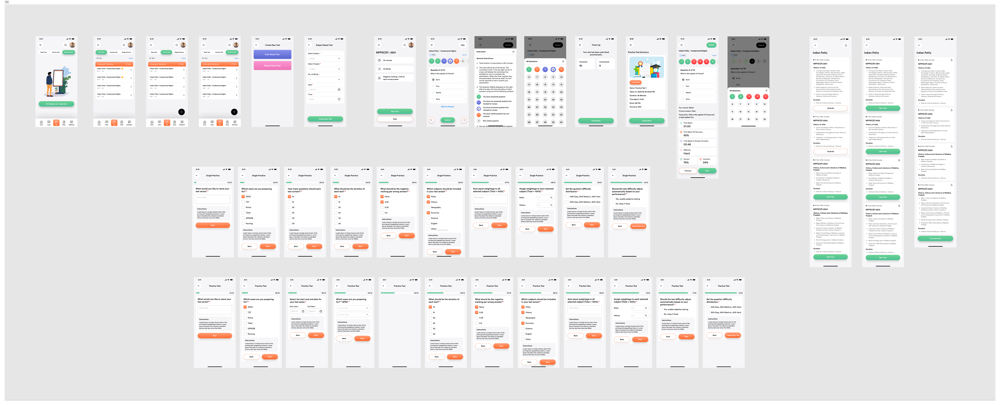
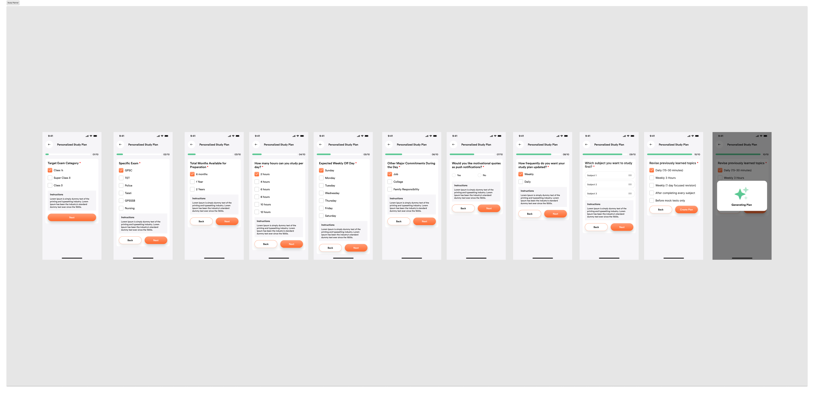
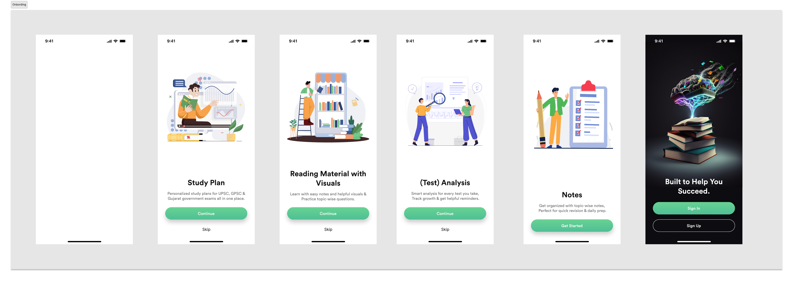
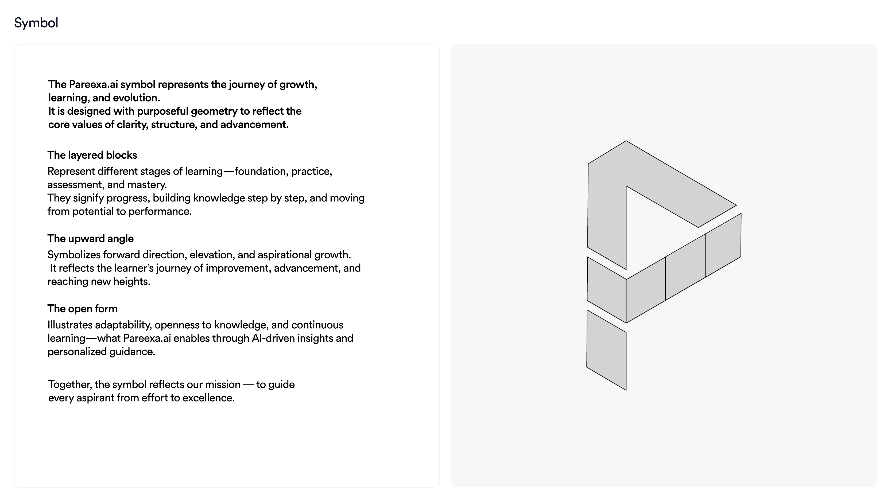
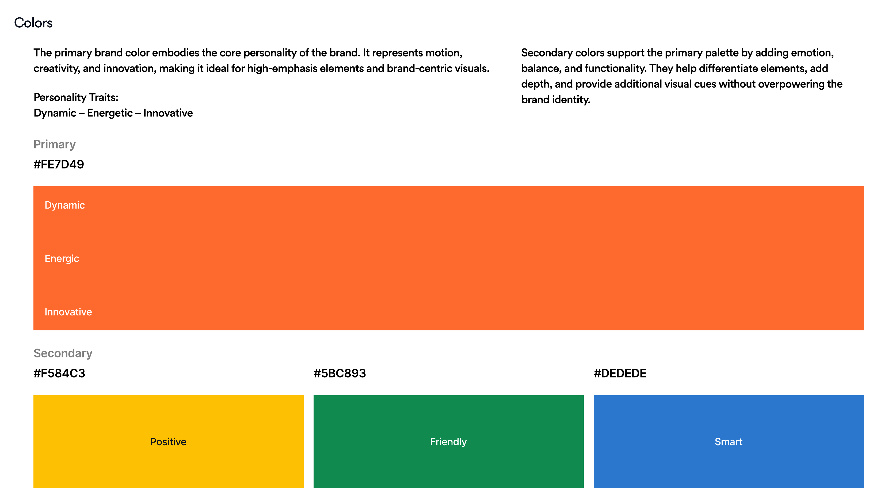
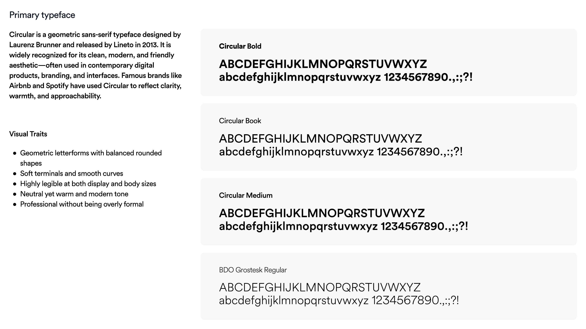
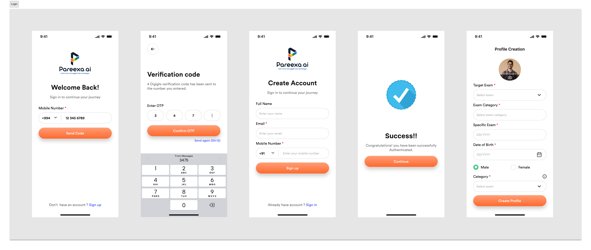
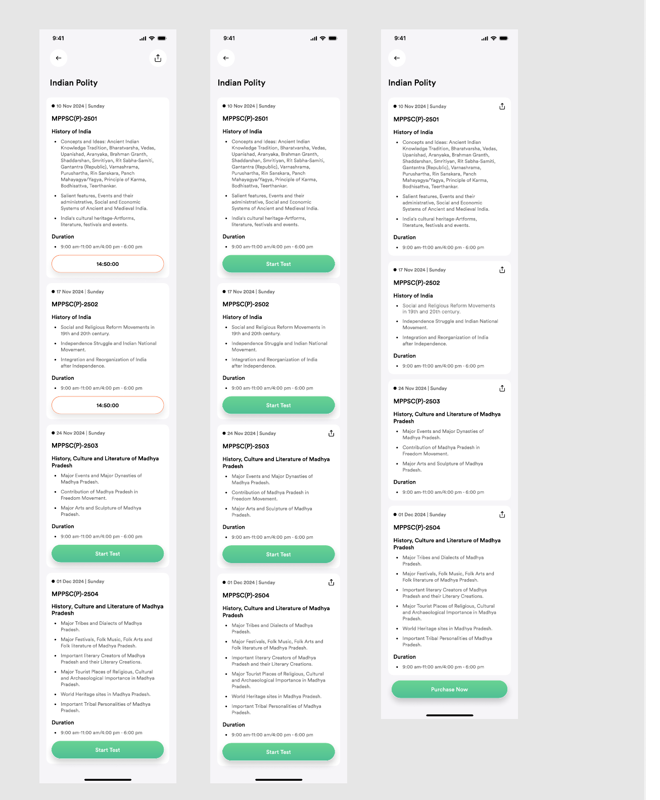
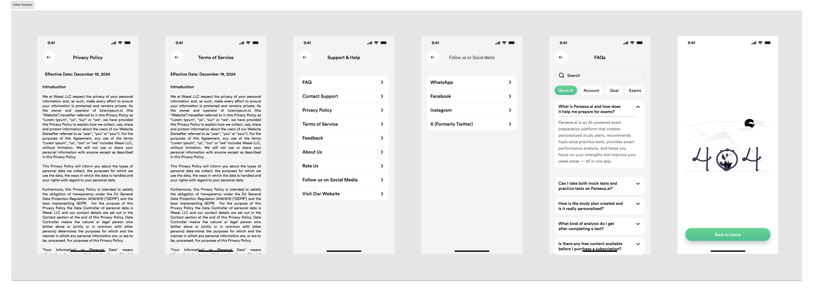
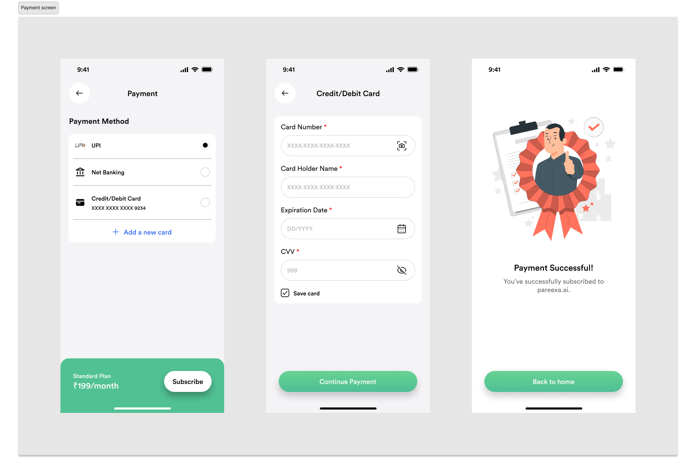

Mobile-first product thinking for aspirants who study, revise, and practice throughout the day.
Consolidating a fragmented exam-prep journey into one connected ecosystem
Aspirants preparing for UPSC, GPSC, MPPSC, and other government exams were juggling separate apps for planning, study material, mock tests, and current affairs. Pareexa.ai was designed to bring planning, learning, testing, analytics, payments, and AI-guided support into one iOS/Android product instead.
At a glance: 6 months as Product Designer and Design System lead — 40+ screens spanning onboarding, planning, testing, and AI-guided analytics, unified under one design system.
Planning, study, PYQs, tests, analytics, notes, current affairs, payments, and AI support in one ecosystem.
End-to-end flows spanning onboarding, personalization, learning, performance feedback, and monetization.
Product design, UX research, IA, prototyping, and design-system thinking across a large feature surface.
Project Snapshot
EdTech platform for government exam aspirants solving fragmented preparation with one unified system for planning, learning, testing, and performance improvement.
My Role
Product Designer, UX Researcher, and Design System Designer leading user research, information architecture, UX strategy, mobile UI, prototyping, and system thinking end to end.
Duration & Platforms
6 months across iOS and Android, with 40+ mobile screens, major learning flows, a shared visual system, and multiple product modules designed as one ecosystem.
Aspirants were stuck with fragmented resources, weak planning, poor visibility, and limited personalized guidance throughout their preparation journey.



Core challenge
- Scattered learning resources across many disconnected surfaces
- No strong study planning system to create consistency
- Weak performance visibility and limited analytics depth
- Low motivation because progress and next steps were unclear
Research anchored the product around three very different preparation realities.
These personas were shaped through structured conversations with the founders about aspirant behavior, combined with secondary research into UPSC/GPSC exam-prep habits — not formal user interviews, given the advisory scope of the engagement.
Rahul
UPSC aspirant, full-time learner
- Needs structure for a long syllabus
- Wants daily clarity on what to study next
- Struggles to connect mock performance with revision
Priya
GPSC aspirant, consistency-focused
- Needs topic-wise progress visibility
- Wants previous-year questions inside the study flow
- Needs confidence that she is improving over time
Kunal
Working professional, limited time
- Needs focused plans that respect time constraints
- Wants quick practice loops instead of long setup
- Needs smart recommendations instead of exploration overhead
Wireframes
Early low-fidelity exploration
Before any visual design work began, I roughed out onboarding, planning, and study/test flows in low-fidelity wireframes to validate structure and navigation against the three personas above — eight of those screens below, spanning the journey from first launch to a completed mock test.
Pareexa.ai
AI-Powered Exam Success
Adaptive Learning Paths
Continue
Skip
Create Account
Start your journey to civil services
Email AddressEnter your email
PasswordCreate a password
Confirm PasswordRepeat password
Sign Up
Already have an account?
Personalized Plan
Step 3 of 9
Target Exam Category
UPSC Civil Services
GPSC Class 1/2
Staff Selection (SSC)
Back
Next
Hello, Pranav
UPSC Prelims in 142 days
Daily Streak
12 Days
Questions
1,240
Today's Task
Sectional Mock: History
Upcoming Mocks
GS Full Mock 1
GS Full Mock 2
Study Plan
12
13
14
15
16
Today's Subjects
Polity & Governance
70%
Economics
30%
Start Today's Session
Mock Test
12:45
Q 4 of 20
Which Fundamental Right is available only to citizens of India?
Right to Equality
Freedom of Speech
Right to Life
Clear
Submit
Test Complete
75%
15 / 20
Correct
15
Wrong
3
Skipped
2
Review Answers
The opportunity was to create one preparation ecosystem instead of isolated tools.
Home
Study
Tests
Analytics
AI
Notes
Current Affairs
Profile
The product vision was to guide learners from confusion to confidence through structured preparation. Instead of jumping between planning apps, notes, test tools, and content sources, Pareexa.ai would bring everything together into one system.
From the beginning, the design principles were clarity, motivation, personalization, feedback, and accessibility: reduce the anxiety that comes with a long, high-stakes syllabus by keeping copy, progress indicators, and next steps supportive rather than punitive.
User Journey Map
Discover
Register
Plan Study
Learn
Practice
Analyze
Improve
Product strategy translated the vision into modules, structure, and measurable goals.
Pareexa AI
Study Planner
Notes
AI Assistant
Analytics
Mock Tests
Reading
Current Affairs
Payments
Information Architecture
Authentication ├ Dashboard ├ Study ├ Tests ├ Notes ├ AI Assistant ├ Profile └ Subscription
Design Goals
- Reduce cognitive overload
- Improve learning consistency
- Encourage daily engagement
- Create measurable progress
Success Metrics (Post-Launch Targets)
Defined with the founders as the tracking framework for after launch, not results measured to date.
- Daily active users
- Test completion rate
- Subscription conversion
- Study plan adherence
The brand system reinforced that promise.
Visual Personality
The guidelines position Pareexa.ai as dynamic, energetic, innovative, friendly, and smart, with a learning-first tone built around clarity and growth.
Color System
Primary orange "#FE6A2E" anchors the brand, supported by black "#111111", white "#FFFFFF", and a broader UI palette for positive, friendly, and smart moments.
Typography
Circular is the primary typeface for warmth and clarity, while Inter supports digital readability across dashboards, forms, and mobile interfaces.



Preparation needed to feel like one guided journey.
The ecosystem was structured as a learning loop rather than a collection of disconnected features. Each module had a clear job in the journey: reduce setup friction, create study consistency, support focused learning, simulate exam pressure, surface meaningful feedback, and guide next actions.
This framing turned Pareexa.ai from a list of features into one connected system, where each module had a defined job in the aspirant's journey rather than existing as an isolated screen.
Onboarding
First-time activationIntroduced value quickly and moved users into personalization with minimal friction.
Planning
Habit-building structureConverted large exam goals into weekly and daily study routines that felt achievable.
Study
Focused content consumptionConnected reading, video, notes, and PYQs so learners could stay in one productive flow.
Tests
Exam-like practiceMock tests and practice loops created pressure, repetition, and confidence before real exams.
Analytics
Performance visibilityScores became actionable through accuracy trends, weaknesses, and revision direction.
Improvement
Next-step guidanceInsights, AI help, and revision support turned feedback into concrete actions for progress.
Designed as one end-to-end loop: discover needs, build routine, learn, practice, analyze, and improve.
Planner, reading, notes, tests, analytics, AI support, current affairs, payments, and more within a unified ecosystem.
Modules were organized around where a task sits in the prep cycle — discover, plan, learn, practice, review — so navigation matches how aspirants actually move through preparation, not how the codebase is split.
1. Onboarding and setup created the base for personalization.
The onboarding experience used illustration-driven introduction screens to quickly communicate product value and increase first-time activation. It introduced users to study planning, reading, and structured preparation in a low-friction way.
Authentication and profile setup then gathered key information such as name, email, phone, target exam, category, DOB, and gender, so the product could personalize study plans and content recommendations from the start.

2. Study planning turned a long exam journey into manageable routines.
Yearly to Daily Breakdown
Study Planner covered yearly, monthly, weekly, and daily planning so aspirants could convert large exam goals into actionable routines.
Goal-Based Schedules
AI-generated schedules and exam-specific preparation flows helped users feel the system was adapting to them, not forcing them into generic plans.
Visible Progress
Planning was not treated as admin work; it was designed as a confidence-building layer that reduced overwhelm and gave direction.
3. The study experience blended reading, media, and revision support.
Reading Experience
Multilingual reading, highlights, notes, translation, and previous-year-question support helped learners stay inside one flow while studying.
Content Consumption
Text, videos, references, and contextual learning tools supported different study styles without making the interface feel scattered.
Recommendation Engine
Suggested courses, topics, and personalized learning paths gave the study module more relevance and better next-step guidance.


Live Prototype
Explore the full mobile prototype
The interactive prototype below is walkable end to end — onboarding, planning, study, tests, notes, and analytics — in the same file used to validate flows before handoff.
Open full-screen in Figma4. Testing had to simulate pressure without adding confusion.
Mock Tests
Instructions
Review
Instructions
Review
The testing ecosystem included mock tests, subject tests, practice tests, and exam simulations. Users could create tests flexibly while still experiencing a realistic exam environment.
Instruction layers made time limits, negative marking, and question count explicit. During the test itself, timer handling, navigation, mark-for-review behavior, and question state visibility were designed to reduce cognitive load.
5. Review and analytics turned raw performance into actionable feedback.
Review Experience
Correct answers, explanations, time analysis, and difficulty signals helped learners understand not just what was wrong, but why.
Question Navigator
Answered, unanswered, and review states gave users a clearer mental model of progress during the exam flow.
Performance Dashboard
SWOT, subject performance, trend graphs, heatmaps, percentile, confidence, negative marking, speed vs accuracy, and time analysis created a deeper feedback system.
Performance was framed over time, not as a one-off score, so learners could see whether consistency was actually improving.
Analytics highlighted where performance was slipping by topic, allowing revision energy to go toward actual gaps rather than guesswork.
The long-term goal was not just reporting but actionable learning guidance: what to revise, what to repeat, and what to improve next.
6. Notes, current affairs, and AI support made the ecosystem feel complete.
The notes ecosystem supported creation, search, tags, and revision organization. Current affairs were curated specifically for exam relevance, helping students bridge day-to-day preparation with dynamic content.
The AI assistant provided instant learning support through chat and suggested prompts, giving users a sense of ongoing guidance instead of leaving them alone with content and scores.
AI Assistant
Always ready to help
Hello! I can explain complex UPSC topics or summarize current affairs.
Can you summarize 'Doctrine of Lapse'?
The Doctrine of Lapse was an annexation policy applied until 1858...
Ask AI anything...
Current Affairs
Today
Yesterday
Jan 12
G20 Summit 2024: Key Takeaways for India
New Economic Policy Reform Bill Introduced
Environmental Protection Act Amendments
Digital Rupee: Phase 2 Pilot Results
See More Articles
Notes
Search through your AI summaries...
Fundamental Duties Summary
The 42nd Amendment Act added 10...
Economic Survey Analysis
Focus on V-shaped recovery...
National Parks List
State-wise breakdown...
Example prompts suggested inside the AI assistant, so aspirants had a starting point instead of a blank chat box:
7. Monetization and support flows were designed with the same clarity.
Subscription strategy included free, monthly, quarterly, half-yearly, and yearly plans. The payment experience was structured as a clear, low-friction sequence: plan selection, payment method, confirmation, and success.
The screen set you shared shows how the flow handled UPI, net banking, and cards, while keeping the plan summary visible and ending with a distinct success state.

Beyond payments, profile management covered exam preferences, purchased tests, referral system, and notifications so the account area felt relevant to ongoing learning.
Support experiences such as FAQ, Help Center, Privacy, Terms, contact, and feedback gave the ecosystem the practical completeness expected from a real product, not just a concept.
A complete preparation ecosystem instead of isolated tools.
Pareexa.ai is currently in pre-launch development. My role as Product Design Advisor focused on establishing the design strategy, information architecture, and a scalable design system ahead of public release — rather than optimizing an already-live product. The impact below reflects that scope: design decisions and system foundations, not usage data or launch results.
Pareexa.ai was a strong exercise in end-to-end product ownership. It pushed me to think beyond isolated screens and design a large ecosystem where planning, content, AI assistance, testing, analytics, and monetization all needed to feel unified, motivating, and scalable.
Product Design Impact
- Designed for product scale, not just visual polish
- Balanced user clarity with monetization and retention
- Built a reusable design language across multiple modules
- Treated analytics as a learning product, not a reporting screen
What I Learned
- Designing AI-assisted learning experiences
- Structuring large information architectures
- Designing performance-driven feedback loops
- Thinking like a product designer, not only a UI designer